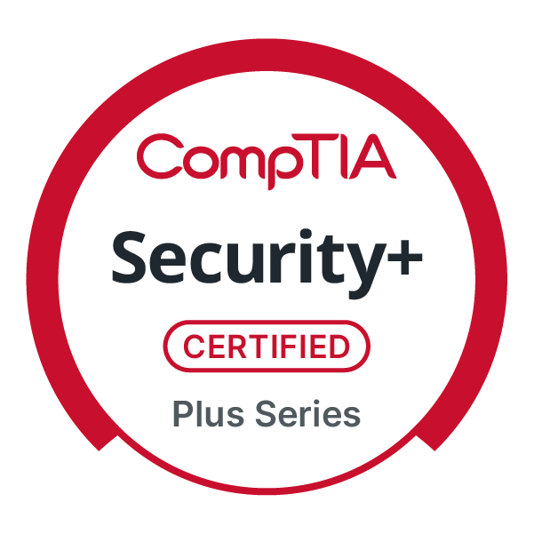

Prairie View A&M University
Computer Science senior. Expected graduation, May 2027. GPA, 3.80.
Computer Science student building hands-on experience across cybersecurity, networking, software, and emerging technology while developing toward technical solutions and security engineering work.
Deja Ware
Most people call me D.
I’m most interested in the space where technical depth meets real-world usefulness. I enjoy troubleshooting systems, understanding the layers behind a problem, and translating technical work into something people can use.
I study Computer Science at Prairie View A&M University and continue building across security, networking, software, AI, and enterprise technology. Leadership keeps me accountable to the people behind the work.
My work connects classroom foundations with hands-on technical practice and leadership.
Computer Science senior. Expected graduation, May 2027. GPA, 3.80.
Experience with cybersecurity fundamentals, network access control, traffic analysis, incident response, and practical risk thinking.
Project work spans software development, REST APIs, AI research environments, HPC workflows, and technical integration.
Expanding enterprise technology knowledge while helping other students connect with technical learning opportunities.

Validated foundations across threats, architecture, operations, risk, and incident response.
Verify credentialSelected work across cybersecurity, AI, software engineering, and infrastructure — from completed investigations to deployed and actively evolving platforms.
Multi-modal medical imaging research platform for brain CT and MRI analysis, including classification, segmentation, Grad-CAM explainability, clinician-review workflows, and HPC-backed model execution.
Blue-team incident response project completed during CodePath Intermediate Cybersecurity, using Splunk and Wireshark to investigate 445K+ network flows, identify FTP/SSH brute-force activity, map attacker behavior to MITRE ATT&CK, and develop containment and recovery actions.
AI-powered Prairie View student assistant developed during a hackathon to help students find campus resources, ask questions, and support academic and schedule planning.
Engineering opportunity and communications platform for PVAMU students, combining verified submissions, role-based review, events, announcements, secure file intake, and opportunity discovery in one centralized Hub.
See current repositories and follow work as it develops.
View GitHubReview my education, technical work, certification, leadership, and skills without leaving the portfolio.
I’m open to technical conversations, internships, collaboration, and opportunities to keep learning through meaningful work.